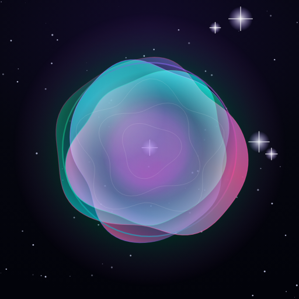
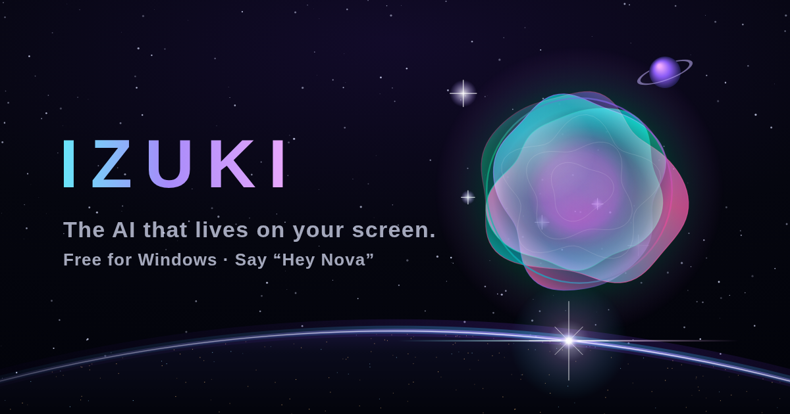

A closer look
Izuki, in pictures.
Explore the Windows AI companion, its phone interface and the Izuki brand. Open any image to see it at full size. These screenshots show the app’s interface; its appearance can vary by version and your settings.

Draw on your screen
Izuki Draw panel on Windows, with controls for asking about something on your screen.
Open full-size image
Chat with Izuki
Izuki Chat panel with a message box, microphone and conversation suggestions.
Open full-size image
Screen watchers
Izuki Watchers panel for watching an area of your Windows screen.
Open full-size image
Make Izuki yours
Izuki Settings panel with AI provider, voice and assistant preferences.
Open full-size image
Izuki on your phone
Izuki phone call interface with its glowing orb and voice controls.
Open full-size image

The Izuki brand icon
The Izuki orb logo in cyan, violet and pink against a dark background.
Open full-size image

Izuki website artwork
Izuki’s official website artwork for the AI companion.
Open full-size image